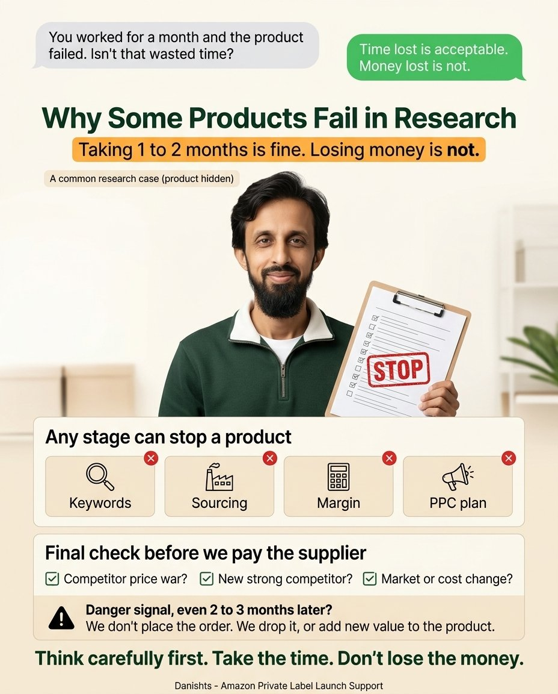

چھوٹا دفتر ہے؟ اپنے پی سی اور ڈیٹا کی حفاظت کریں
پی سی سیکیورٹی اور بیک اپ کے 4 آسان مراحل۔
مزید پڑھیں ←
ACoS بمقابلہ TACoS: فرق کیا ہے؟
دو اعداد، دو مختلف سوال، ایک آسان مثال کے ساتھ۔
مزید پڑھیں ←
کیا آپ کا CCTV ہیکرز سے محفوظ ہے؟
IP کیمروں کے خطرات اور 6 آسان حل۔
مزید پڑھیں ←
CCTV: DVR بمقابلہ NVR بمقابلہ IP کیمرہ
آپ کے دفتر کے لیے کون سا سسٹم ٹھیک ہے، اور دفتر کے سائز کے مطابق صحیح سیٹ اپ۔
مزید پڑھیں ←
ایمازون PPC: وہ خرچ جو اندھا لگتا ہے
آٹو بمقابلہ مینول مہمات، اور بجٹ کی پلاننگ پہلے کیوں کریں۔
مزید پڑھیں ←
بزنس ای میل: Google Workspace بمقابلہ Microsoft 365 بمقابلہ cPanel
cPanel، Google Workspace یا Microsoft 365: فوائد، نقصانات اور سیٹ اپ کے 4 اصول۔
مزید پڑھیں ←
اپنی ایمازون لسٹنگ کی تصاویر کیسے تیار کریں
مرکزی تصویر کے اصول، 5 قسم کی تصاویر اور 6 مراحل کی چیک لسٹ۔
مزید پڑھیں ←
ایمازون کی کچھ پروڈکٹس ریسرچ میں کیوں ناکام ہوتی ہیں
کون سا مرحلہ پروڈکٹ کو روک سکتا ہے، اور ادائیگی سے پہلے آخری جانچ۔
مزید پڑھیں ←
پی سی سست ہے؟ ہمیشہ انٹرنیٹ قصوروار نہیں ہوتا
مہینے میں دو بار کرنے کے لیے پی سی کی دیکھ بھال کی آسان 6 مراحل والی چیک لسٹ۔
مزید پڑھیں ←
دفتری نیٹ ورک کو محفوظ کیا بناتا ہے؟ 6 آئی ٹی اصول
پی سی آڈٹ، بینڈوڈتھ، VLAN، ایکسیس پوائنٹ، بیک اپ اور AD ڈومین۔
مزید پڑھیں ←
انٹرنیٹ چلتا ہے، مگر WiFi والے پرنٹ نہیں کر پاتے
دو نیٹ ورکس ہوں تو ایسا کیوں ہوتا ہے، اور آسان حل۔
مزید پڑھیں ←
دفتر میں LAN بمقابلہ WiFi: کیا کیبل پر رہنا چاہیے؟
کون سے ڈیوائس LAN پر ہوں، کون سے WiFi پر، اور کیوں۔
مزید پڑھیں ←
ایمازون پروڈکٹ فائنل کب ہوتی ہے؟ 7 مراحل
پروڈکٹ ریسرچ سے PPC اور لانچ تک۔
مزید پڑھیں ←
ایمازون سپلائر سے بات چیت: 5 سے 8 سپلائرز سے بات کریں
سپلائرز کا موازنہ کیسے کریں اور شرائط تحریری کیسے لیں۔
مزید پڑھیں ←
ایمازون PPC: ہر نئی لانچ کو پلان کی ضرورت کیوں ہے
بجٹ، بڈ اور ACoS کی آسان مثال کے ساتھ وضاحت۔
مزید پڑھیں ←